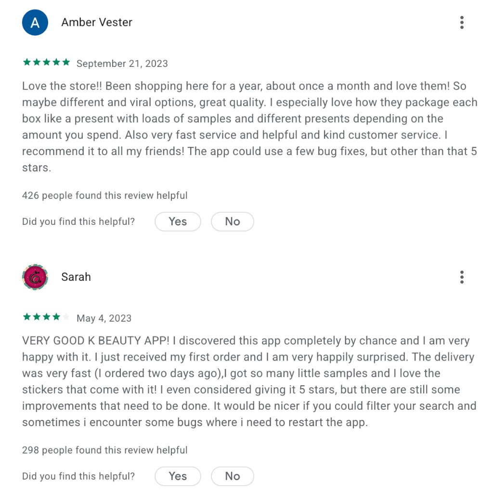
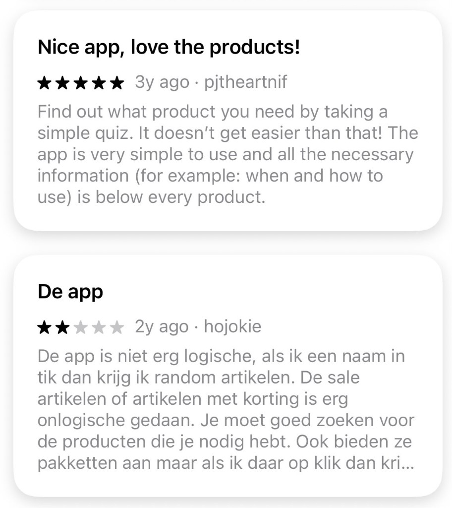

01
Prioritize
Focus on high severity issues first: moments that block product discovery, force backtracking, or reduce product confidence.
A UX review and redesign for the product discovery flow.
Analysis of the current business context, target users, competitive benchmarks, and the rationale behind selecting the discovery flow.
UX/UI audit of the existing flow, including its strengths, weaknesses, usability issues, and key design trade-offs.
Interactive prototype demonstrating the before-and-after experience, supported by a scalable design system.
Korean Skincare is a curated K-beauty marketplace that makes unfamiliar products, ingredients, and routines more accessible to Western consumers. Its business goal is to attract new customers, build trust in the platform, and develop long-term customer relationships. Business success can therefore be evaluated through metrics such as customer acquisition, conversion rate, average order value, repeat purchase rate, and customer retention.
Discovery is the first step before purchase. If users cannot find relevant products, they may drop off before product detail or checkout.
Users on the app are probably already quite loyal and have an account. That is why personalization matters to them: they expect discovery to reflect their skin concerns, preferences, and past behavior instead of starting from a blank catalog every visit.
Reviews from the Google Play and Apple Store mentioned weak search, missing filters, unclear sale browsing, and no easy brand navigation.


CVR / purchase conversion rate
Do more users who enter discovery eventually purchase?
Revenue per user / average order value
Does better discovery lead users to buy more relevant products or build fuller routines?
Add to cart rate
Are users moving from discovery into purchase intent?
Return rate
Do users choose more suitable products, reducing wrong fit purchases?
Search success rate
Do searches lead to product clicks, filter use, add to cart, or purchase?
Filter usage rate
Are users using skin type, concern, brand, price, and rating filters to narrow options?
Category to product CTR
Do users enter a category and click into relevant products?
Quiz / guided recommendation completion rate
Are users engaging with guided discovery when they do not know what to choose?
Users on the app are probably already quite loyal and have an account. That's why personalization is important to them.
They do not want to browse by brand first; they want the app to help solve a problem.
These users are not complete beginners, but they are browsing because they want to discover something new. They may not have a fixed product in mind.
They are interested but need a reason to trust and try a product.
Strong at turning skincare knowledge into shopping confidence through guides, routines, and consultation style content.
Feels closer to korean skincare's European market, with a broad brand catalog, blog, and community led social content that builds trust more like a specialist boutique than a general beauty retailer.
Competes through large assortment, frequent promotions, but the mobile experience feels less polished.
Across the benchmarked competitors, category based navigation is a shared pattern for supporting product discovery. Skin Cupid demonstrates that effective K beauty shopping depends on guidance, personalization, and confidence in product choices. With Skin Cupid and Little Wonderland being primarily web first, and Stylevana's app experience feeling less polished, korean skincare has a clear opportunity to differentiate through a stronger, more guided mobile app experience.
I prioritize issues by how directly they affect the user's ability to find the right product. Since the app already has many features, the trade-off is not to add more modules, but to fix the moments that block discovery.
High severity = breaks the flow.
Medium severity = the flow still works, but feels harder to use.
Low severity = minor polish gaps.
For this review, I focused on high severity issues first.
As a first-time user with mild sunburn after vacation from Spain
I want to find after sun care through categories or search
So that I can treat my skin without already knowing the exact product name
Scenario: Lucy
Lucy knew our brand from a friend and opened the app for the first time. The homepage promotions felt overwhelming and did not give her clear guidance, so she went to Collections and opened Skin Concerns, thinking after sun might be there. She did not find it. She wanted to search from Collections, but there was no search bar, so she went back to the homepage and started searching.
Click a step to see the annotated screen.
Explore the redesigned discovery flow in an interactive prototype. Click through screens, and drag the before/after slider to compare the current app with the new design.

The redesign extends beyond this flow. A shared system keeps typography, spacing, components, and CTAs consistent across the app.
A four-step roadmap from audit findings to shipped improvements.
Focus on high severity issues first: moments that block product discovery, force backtracking, or reduce product confidence.
Run a quick feasibility review with the agency to understand what can be changed in the current app architecture, CMS, search logic, and product taxonomy.
Translate the design into an implementation ready design system handoff: tokens, reusable components, component states, and acceptance criteria, so the agency can build the experience consistently and scale it across the app. And even further if we have our own dev team, they can benefit from this.
Validate the redesigned flow with a small usability test, then track search success, category engagement, product detail clicks, and add to cart from discovery.